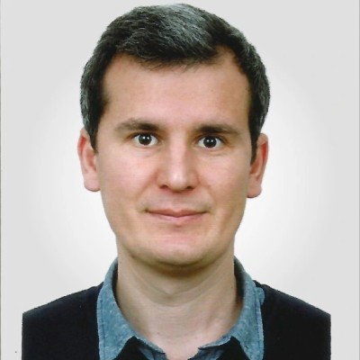

ERP & Entegrasyon
Netsis ERP üzerine ara katman API'ler, anlık maliyet modelleri ve kurumlar arası veri dönüşümü.
İzmir, Türkiye · Uzaktan çalışıyor
Full Stack .NET Developer/Eski Takım Lideri
ERP entegrasyonları, bulut tabanlı SaaS ürünleri ve yapay zekâ destekli servisler geliştiriyorum.

01 · Hakkımda
2015'ten bu yana .NET ekosisteminde uçtan uca ürün geliştiren bir yazılım uzmanıyım. Lojistik, eğitim, üretim, sağlık ve medya sektörlerinde; ERP (Netsis) entegrasyonlarından mikroservis mimarilerine, Azure ve Google Cloud üzerinde çalışan kurumsal platformlardan ETL ve raporlama süreçlerine kadar geniş bir yelpazede sorumluluk aldım; Monovi'de 4 yıl yazılım geliştirme ekibine liderlik ettim. Son dönemde Python/FastAPI ile yapay zekâ destekli servisler (Whisper, Claude API) geliştirdim; kişisel projelerimde .NET 10, Flutter ve Rust ile uçtan uca ürünler üretiyorum. En güçlü olduğum alanlar, mevcut sistemleri modern teknolojilerle yeniden yazmak ve karmaşık iş kurallarını sade, ölçeklenebilir çözümlere dönüştürmek.
Netsis ERP üzerine ara katman API'ler, anlık maliyet modelleri ve kurumlar arası veri dönüşümü.
Azure üzerinde SaaS ürünleri, mikroservisler, çok kiracılı yapılar ve ETL/raporlama hatları.
LLM ile belge okuma, Whisper ile zaman damgalı söz üretimi, ses ve perde analizi.
React ve Vue.js arayüzler; Flutter ile mobil, Kotlin ile Android TV uygulamaları.
02 · Deneyim
Yazılım Uzmanı · Uzaktan
Yazılım Uzmanı
Yazılım Geliştirme Takım Lideri (Ağu 2021 – Tem 2025) · Yazılım Uzmanı (Mar – Ağu 2021)
Yazılım Geliştirici
Yazılım Geliştirici
Stajlar: Yorka Bilgisayar Yazılım (Temmuz – Eylül 2014) · Pamukkale Üniversitesi Bilgi İşlem Daire Başkanlığı (Haziran – Temmuz 2014)
03 · Projeler
İş dışında uçtan uca geliştirdiğim ürünler: .NET 10, Flutter, Rust ve Kotlin.
Kooperatiflerin kâğıt yem/gübre fiyat listelerini fotoğraftan yapılandırılmış veriye çeviren ve üreticiye mobil fiyat takibi sunan platform. Görsel-dil modelinin çıktısı 8 deterministik doğrulayıcı ve zorunlu insan onayından geçerek yayımlanır; çok bayili sürüme geçiş sürüyor.
Kurumun kendi sunucusunda çalışan, KVKK gözetilerek tasarlanmış modüler eğitim (LMS) ve İK platformu. 13 aktif modül; aynı React kod tabanından web, masaüstü ve mobil istemci üretiliyor.
Oyun alanları ve çocuk aktivite merkezleri için çok kiracılı (multi-tenant) SaaS. API Gateway arkasında kimlik, rezervasyon ve QR giriş-çıkış, ödeme, bildirim, raporlama ve medya dahil 9 mikroservis.
ABP Suite benzeri kod üretim platformu: tanımlanan entity'lerden Rust backend, Angular arayüz ve Flutter mobil proje üretir. Şablon yönetimi, JWT + rol/yetki sistemi ve üretim sonrası merge conflict çözüm ekranı.
Android TV için canlı TV ve radyo uygulaması. Yayınları üç kademede izleyen sağlık motoru ölü yayınları gizler, yayın koptuğunda aynı kanalın alternatifine sessizce geçer.
04 · Yetenekler
05 · Eğitim & Sertifikalar
Bilgisayar Mühendisliği (Lisans) — GANO 3.04 / 4
2010 – 2015
06 · İletişim
Yeni projeler, iş birlikleri ya da teknik sorular için e-posta veya LinkedIn üzerinden ulaşabilirsiniz.